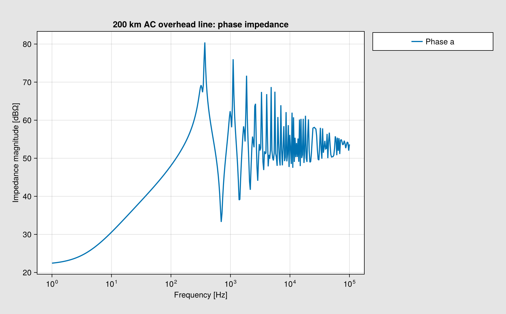
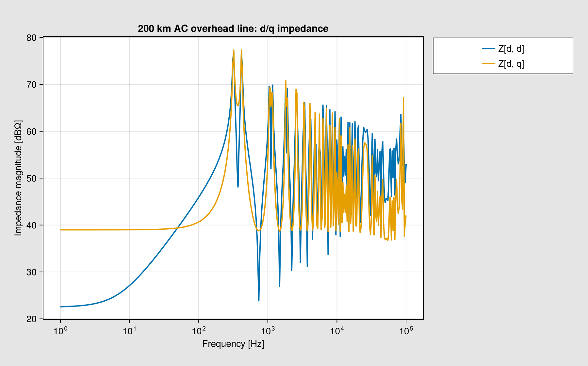
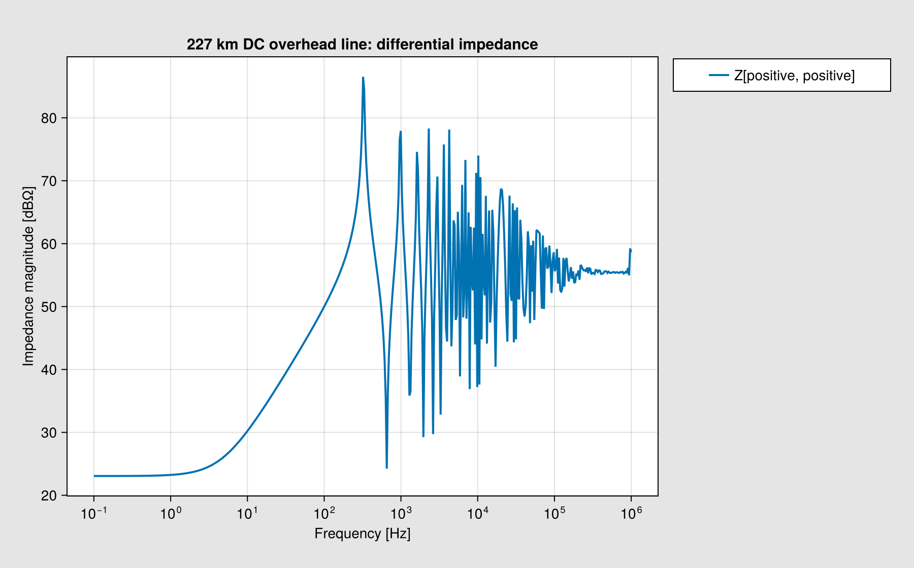
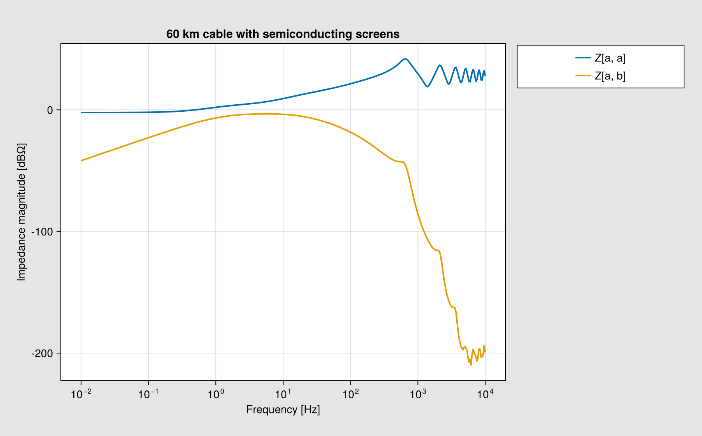
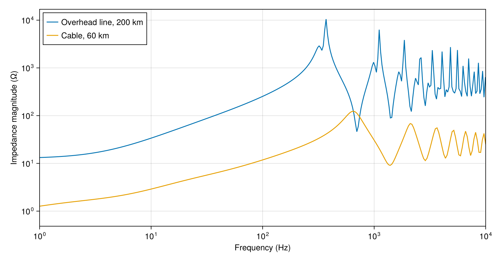

Line and cable models
Conductor spacing, insulation and the earth return set a line's impedance over frequency. A grounded receiving end makes the sending-end impedance inductive at low frequency. Distributed capacitance produces resonances as the electrical length increases.
using PowerImpedance
using CairoMakieThe AC overhead line
The 200 km line has three conductors in a flat arrangement and two ground wires. Radii, heights, spacing and sag are in metres. DC resistance is in ohms per kilometre. The earth tuple contains relative permeability, relative permittivity and resistivity in ohm metres.
ac_conductors = Conductors(
organization = :flat, nᵇ = 3, Rᵈᶜ = 0.063,
rᶜ = 0.015, yᵇᶜ = 30, Δxᵇᶜ = 10, dˢᵃᵍ = 10
);
ac_groundwires = Groundwires(
nᵍ = 2, Rᵍᵈᶜ = 0.92, rᵍ = 0.0062,
Δxᵍ = 6.5, Δyᵍ = 7.5, dᵍˢᵃᵍ = 10
);
ac_elements = (
source = ac_source(v = 230, p = 80),
line = overhead_line(
length = 200e3, conductors = ac_conductors,
groundwires = ac_groundwires, earth_parameters = (1, 1, 100)
)
);
ac_connections = (
NetworkBuilder.Net(:a; terminals = ((:source, :ac, :a), (:line, :side1, :a))),
NetworkBuilder.Net(:b; terminals = ((:source, :ac, :b), (:line, :side1, :b))),
NetworkBuilder.Net(:c; terminals = ((:source, :ac, :c), (:line, :side1, :c))),
NetworkBuilder.Bus(:gnd; ports = ((:line, :side2),))
);
ac_network = NetworkBuilder.define(ac_elements, ac_connections; exclude = (:source,));[ Info: Excluded elements: (:source,).exclude = (:source,) removes the source for the impedance calculation. The response relates injected phase currents to sending-end voltages and includes mutual coupling between conductors.
ac_response = compute(
PowerImpedanceProblem(
ac_network; nodes = [:a, :b, :c],
frequency_range = (1.0, 1e5, 400)
),
NodalImpedance()
);The same line in d/q coordinates
An ACDQ bus represents the line with d and q coordinates. These coordinates rotate at 50 Hz. Their frequency refers to a perturbation in the rotating frame. The geometry and earth properties still describe the same physical line.
dq_elements = (
source = ac_source(v = 230, p = 80),
line = overhead_line(
length = 200e3, conductors = ac_conductors,
groundwires = ac_groundwires, earth_parameters = (1, 1, 100)
)
);
dq_connections = (
NetworkBuilder.Bus(Symbol(""); ports = ((:source, :ac), (:line, :side1)),
domain = ACDQ),
NetworkBuilder.Bus(:gnd; ports = ((:line, :side2),), domain = ACDQ)
);
dq_network = NetworkBuilder.define(dq_elements, dq_connections; exclude = (:source,));
dq_response = compute(
PowerImpedanceProblem(
dq_network; nodes = [:d, :q],
frequency_range = (1.0, 1e5, 400)
),
NodalImpedance()
);
ac_plot = only(PowerImpedance.plot(
ac_response; entries = (1, 1), labels = ["Phase a"],
title = "200 km AC overhead line: phase impedance",
display_plot = false, controls = false
));
ac_plot.figure
The off-diagonal d/q entry describes coupling between the rotating coordinates. The diagonal entry gives the d-axis voltage response to a d-axis current injection.
dq_plot = only(PowerImpedance.plot(
dq_response; entries = [(1, 1), (1, 2)],
title = "200 km AC overhead line: d/q impedance",
display_plot = false, controls = false
));
dq_plot.figure
The DC overhead line
The 227 km bipolar line uses two subconductors per pole, spaced 0.4572 m apart. The poles are 11.8 m apart and have a suspension height of 27.5 m. Each two-conductor port represents one differential DC voltage and current. The receiving port connects to ground. The sending port retains the combined effect of self and mutual impedances.
dc_elements = (
line = overhead_line(
length = 227e3,
conductors = Conductors(
nᵇ = 2, nˢᵇ = 2, organization = :flat,
Rᵈᶜ = 0.06266, rᶜ = 0.01436, yᵇᶜ = 27.5,
Δxᵇᶜ = 11.8, dˢᵇ = 0.4572, dˢᵃᵍ = 10
),
groundwires = Groundwires(
nᵍ = 2, Δxᵍ = 6.5, Δyᵍ = 7.5,
Rᵍᵈᶜ = 0.9196, rᵍ = 0.0062, dᵍˢᵃᵍ = 10
),
earth_parameters = (1, 1, 100)
),
);
dc_connections = (
NetworkBuilder.Bus(:positive; ports = ((:line, :side1),)),
NetworkBuilder.Bus(:gnd; ports = ((:line, :side2),))
);
dc_network = NetworkBuilder.define(dc_elements, dc_connections);
dc_response = compute(
PowerImpedanceProblem(
dc_network; nodes = [:positive],
frequency_range = (0.1, 1e6, 500)
),
NodalImpedance()
);
dc_plot = only(PowerImpedance.plot(
dc_response; entries = (1, 1),
title = "227 km DC overhead line: differential impedance",
display_plot = false, controls = false
));
dc_plot.figure
The cable
The 60 km cable group has three cores in a triangular arrangement. Each cable has a conducting core, a metallic sheath and magnetic armour, separated by insulation. The core insulation includes a 2 mm inner semiconducting screen and a 1.5 mm outer screen. The inputs a and b give their thicknesses in metres. Each receiving terminal connects to ground through 1 milliohm.
cable_elements = (
line = cable(
length = 60e3,
positions = [(0, 1.317150236), (-0.07175, 1.441424882), (0.07175, 1.441424882)],
C1 = Conductor(rₒ = 25.45e-3, ρ = 2.63e-8, μᵣ = 1),
I1 = Insulator(
rᵢ = 25.45e-3, rₒ = 50.65e-3, a = 2e-3, b = 1.5e-3, ϵᵣ = 2.3
),
C2 = Conductor(rᵢ = 50.65e-3, rₒ = 52.35e-3, ρ = 22e-8, μᵣ = 1),
I2 = Insulator(rᵢ = 52.35e-3, rₒ = 55.75e-3, ϵᵣ = 2.3),
C3 = Conductor(rᵢ = 55.75e-3, rₒ = 66.55e-3, ρ = 18e-8, μᵣ = 10),
I3 = Insulator(rᵢ = 66.55e-3, rₒ = 71.75e-3, ϵᵣ = 2.3),
earth_parameters = (1, 1, 1)
),
termination = impedance(z = 1e-3, conductors = 3)
);
cable_connections = (
NetworkBuilder.Net(:a; terminals = ((:line, :side1, :a),)),
NetworkBuilder.Net(:b; terminals = ((:line, :side1, :b),)),
NetworkBuilder.Net(:c; terminals = ((:line, :side1, :c),)),
NetworkBuilder.Net(:end_a;
terminals = ((:line, :side2, :a), (:termination, :side1, :a))),
NetworkBuilder.Net(:end_b;
terminals = ((:line, :side2, :b), (:termination, :side1, :b))),
NetworkBuilder.Net(:end_c;
terminals = ((:line, :side2, :c), (:termination, :side1, :c))),
NetworkBuilder.Bus(:gnd; ports = ((:termination, :side2),))
);
cable_network = NetworkBuilder.define(cable_elements, cable_connections);
cable_response = compute(
PowerImpedanceProblem(
cable_network; nodes = [:a, :b, :c], frequency_range = (0.01, 1e4, 400)
),
NodalImpedance()
);
cable_plot = only(PowerImpedance.plot(
cable_response; entries = [(1, 1), (1, 2)],
title = "60 km cable with semiconducting screens",
display_plot = false, controls = false
));
cable_plot.figure
Thin insulation gives the cable a larger capacitance per kilometre than the air gaps of an overhead line. This capacitance and the line inductance set the wave speed and resonance frequencies. The curves show the phase-a impedance of the 60 km cable and the 200 km overhead line. The first cable peak is near 650 Hz and the dominant overhead-line peak is near 370 Hz. The cable's shorter length offsets its lower wave speed.
comparison = Figure(size = (850, 450));
axis = Axis(
comparison[1, 1]; xlabel = "Frequency (Hz)", ylabel = "Impedance magnitude (Ω)",
xscale = log10, yscale = log10
);
lines!(axis, real.(ac_response.frequencies) ./ (2π),
abs.(ac_response.response[1, 1, :]); label = "Overhead line, 200 km");
lines!(axis, real.(cable_response.frequencies) ./ (2π),
abs.(cable_response.response[1, 1, :]); label = "Cable, 60 km");
axislegend(axis; position = :lt);
xlims!(axis, 1.0, 1e4);
comparison
Back to Examples